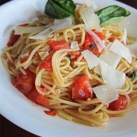

How to make pasta!
Making pasta is easier than you think and requires very few ingredients.

Ingredients
- 2 cups of flour
- 3 eggs
- 1 tablespoon oil
- 1 teaspoon salt
Cooking Steps
- On a large, clean surface, make a pile with the 2 cups of flour. Make a large "well" or dip in the flour, this is where out egg mixture will go.
- Add the salt and oil into the well of flour.
- Next we will be adding the eggs. To make mixing easier, consider beating the eggs in a small bowl first, to help break them up. Add your eggs to the well of flour.
- This next part may get a little messy. Starting bring flour into the egg mixture from the sides and mix.
- Eventually you will have incorporated enough flour into the mixture that it begins to form a dough.
Continue to mix this until you can begin to knead the dough. Knead until you have a relatively cohesive and smooth dough. Add water if you find the mixture is too dry,
but only a teaspoon at a time. Similarly, add more flour if your dough is too wet.
- Cover this dough with a damp cloth and let sit for half an hour. If you dont need your dough until tomorrow, wrap in plastic and put in the fridge.
- Now, divide your dough into equal parts, about the size of your palm.
- If you have a pasta roller and cutting attachment, starting rolling out your pasta from the largest to the smallest setting, at least twice on each level. Between each roll,
fold the ends of the pasta to the center so they overlap slightly before passing it through again. Once done, start putting your pasta through the cutter you want!
If you don't have a pasta roller and attachment, you still have a few options.
The first obvious one is to roll out your dough for lasgana. If you want fetuchinni noodles, you can try to roll out your dough and cut by hand. This won't be perfect but it works
if you have the patience and don't care if your noodles are a little wonky.
- Finally, either cook your pasta right away or store it. To store it, allow the noodles to air dry for a few hours to a day, seperating the noodles as much as you can before
hanign or laying out to dry. Then either store for a few days or weeks (many people can store dry pasta for months or longer though) in an airtight container, or
store in a container in the freezer for longer. You can add additional flour during the drying or storage process if you find the pasta sticking together to much. Enjoy!